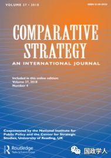

收录于合集

简 介
【 作者 】
Martin Mitchell ，明尼苏达州立大学曼卡托分校地理学教授。获伊利诺伊大学地理博士学位。拥有在台湾丰富的实地经验。
【 来源 】
Comparative Strategy, 36:5, 383-391。
【 编辑 】
李玉婷
【 审校 】
崔宇涵 庞林立
【 期刊简介 】

《比较战略》借鉴了主要国际防务分析师和主题专家的历史观点和战略见解，为考虑当前和未来的重大安全问题提供了框架。该期刊致力于振兴西方外交和国防政策制定和国防规划中基本假设背后的思想，分析自苏联解体以来世界的动态变化。
【 提纲 】
核心观点
主权、管辖权与领土
台湾的地理和战略意义
美国政策的再评估
政策的适用、结果与未来轨迹
西太平洋地缘战略的再评估
结论
**【声明】
**
本周，国政学人微信公众平台将系统编译SSCI“台湾专题”系列文章。编译目的是 让我们更直观了解境外学者是如何看待和分析台湾问题的，文章观点不代表国政学人观点。
核心观点
台湾位于亚洲和中国大陆的近海，地处日本和菲律宾之间，具有重要的战略意义。美国的台湾政策需要调整以适应现实和未来的趋势。作者对美国维持和调整“一个中国”政策提出四点建议：（1）防止台湾永久成为中国大陆军队进入太平洋的军事基地；（2）维持台湾作为中国大陆与日本之间的缓冲区地位；（3）有机会以公平的方式促进统一，并在台湾人民选择统一的情况下取回某些军事资产；（4）阻止美国在中国大陆设定的时间和地点的紧张气氛中做出导致长期后果的短期决策。
文章导读
** 主权、管辖权与领土**
现代民族国家以地理位置为基础，保有对其境内公民的全部权力。占有领土构成边界。在边界内，主权国享有管辖权，包括税收、财政支出、进行防卫和外交事务、控制货币流动，以及通过制定和执行法律促进民众的普遍福利。领土也构成了主权国家可以否认或控制进入权和所有权的基础。领土的恢复是一种民族主义原则，是一个国家的基础事业。比如在短期内，针对领土问题进行宣传或口头陈述；长远来看，权力包括军事、经济和外交压力。除非第三方持续抵抗和（或）干预，否则领土问题会通过谈判或者武力而解决。
** ** 台湾的地理和战略意义****
台湾的地理战略意义主要表现在以下几点：
首先，台湾位于美国阿拉斯加-日本-台湾-菲律宾的弧线上。中国作为一个以陆地为基础的大国， 大陆面临着美国海空力量主导的亚洲外围势力 。
其次，日本进口的石油几乎都从目前台湾管辖范围内经过。如将台湾作为中国大陆军事力量投射到西太平洋的基地，将 加剧中日的紧张气氛 。
最后，标志着权力和控制的界限并不意味着法定边界。 台湾与中国大陆的统一意味着大陆在美国的海上防线中实现了永久的突破 。美国不得不退居日本南部和关岛，并面临着菲律宾倒向中国的风险。
美国政策的再评估
关于美国目前的战略模糊与“一个中国”政策的研究已有很多。那么：美国的政策是否适用于当今的台湾问题？应该倡导什么政策？
**战略模糊和 “一个中国”政策表明美国承认一个中国（中华人民共和国），解决台湾问题应该通过和平手段实现。战略模糊使得中国大陆和台湾不得不猜测或假设华盛顿的意图。**另一方面，战略的模糊性假设每一方都有有限的或接近于零的投射能力，并且时间的流失在短期和中期内无关紧要。然而现实是，这些在1972年成立的假设在目前无效，美国目前的政策依赖于不存在的基础。因此，华盛顿需要重新考虑其政策。
自1895年以来，台湾120多年来与北京没有发生政治关系。主权通过其代理人的经常性访问来确定权力，拥有和控制领土是主权的基础。中国目前未能达到有关台湾的这些标准。
如何评估华盛顿长久以来的“一个中国”政策？统一的台湾与大陆使得这一问题没有实际意义；而独立的台湾违背了美中合作的支点。
20世纪50年代艾森豪威尔总统的海军干预开始时，早期的美国政策制定者就拒绝了蒋介石和国民党恢复包括大陆在内的中华民国的政治幻想。艾森豪威尔总统建议蒋介石放弃国民党被认为是重新占领大陆的跳板。几年后，肯尼迪总统表示美国将捍卫台湾反对中华人民共和国入侵但不支持国民党入侵中华人民共和国。台湾不承认自己是唯一合法的中国。因此，美国将继续承认中华人民共和国是一个中国，从而消除了国民党最终促成并且大约五十八年前杜鲁门政府最初坚持的任何含糊之处。
** ** ** ** 政策的适用、结果与未来轨迹********
中国大陆采取的行动以及华盛顿发出的各种相互矛盾的信号使得战略模糊性变得更加含糊不清。
自20世纪90年代中期以来，中国大陆不断使台湾边缘化。克林顿政府释放出矛盾的信号。一方面，派遣海军到台湾海峡以及岛屿以东的水域；另一方面，克林顿发表“三不”言论。布什政府关于台湾防御的态度表现出“亲台”，奥巴马政府也促进了台湾防御的现代化。由于美国的双重言论，许多台湾人放弃了对独立的支持。简单地说：如果没有明确的美国支持来反对中华人民共和国的强制行为，台湾许多人也会推迟或避免独立/统一问题。
进而，中国大陆和共产党逐渐能制定统一的条件，美国政策固有的后果源于与其基本假设脱离的战略模糊性。这种情况使美国有两种选择，这两种选择可能很少或根本没有预先考虑，并且可能在危机气氛中发挥作用。
首先，华盛顿可以抗议，威胁制裁，召回其大使，并实施旨在表面反对中国行动的其他程序性行动，但实际上只不过是一场短期公关活动。 然而它能起到以下作用：（1）说明美国双重标准的最终目标，即美国入侵中东国家强行移植民主，却旁观一个良好运作的民主政权被一个独裁的共产主义政权吞并；（2）成为美国失败地履行1979年“与台湾关系法”规定的责任的一部分，其中包括保护台湾免受胁迫；（3）导致地区不稳定，因为菲律宾和韩国将不得不做出选择；（4）通过以进攻性武器武装日本，导致日本和中国之间的地区军备竞赛。
其次，美国可以宣布打算进行军事干预，并支持在台湾进行公开、真正自由的公民投票 。 公告很可能会在中国大陆规定的条件下与中国发生激烈冲突。在地理上，这种冲突主要局限于海空，这种情况目前有利于美国，但随着中国大陆实力的增强，这种优势逐渐下降。
** ** ** ** ** 西太平洋地缘战略的再评估**********
目前的战略模糊政策植根于不再存在的条件和假设。 根据美国长期存在的自决原则，台湾人民应该自由决定自己的命运，美国不仅要尊重他们的决定，还要抵抗中国大陆的军事和地缘政治压力。 这一原则能避免战略模糊性，并提供三大优势。
首先，表达公开支持自决的政策符合台湾向多党民主政治实体的演变 ，以及“联合国宪章”第1章第1条。从美国的角度来看，自决并非没有先例。
其次，这种积极而明确的美国政策调整消除了在战略模糊背景下可能发生的任何误解，并加强了《台湾关系法》中所载的现有防务安排。
第三，如果台湾人选择在近期或遥远的未来实现统一， 华盛顿有望成为一个外交中介，以开放和坦率的方式促进各方之间的直接对话。 这样的情况会让台湾感受到一个公平的竞争环境。
另一方面，如果台湾人选择独立或长期维持现状（有点类似于1994年的波多黎各公投），中国大陆将优先使用台湾作为向太平洋投射硬实力的基础，从而维持中国目前的海上边缘地位。此外，台湾拥有的政治和法律价值，可以缓和中日矛盾。
** ** ** ** ** ** 结 论************
作者对维持和调整“一个中国”政策提出四点建议：（1）防止台湾永久成为中国大陆军队进入太平洋的军事基地；（2）维持台湾作为中国大陆与日本之间的缓冲区地位；（3）有机会以公平的方式促进统一，并在台湾人民选择统一的情况下取回某些军事资产；（4）阻止美国在中国大陆设定的时间和地点的紧张气氛中做出导致长期后果的短期决策。
扫描下方小程序码查看原文p df
本文由国政学人微信公众平台编译首发
更多阅读
国政学人 （ID：guozhengxueren)
为方便学人及时阅读高质量文章
别忘把国政学人设置 星标 哦~